oi, tá livre amanhã?tô sim!ah verdadeentão, sobre isso?
um áudio de seis minutos
a conversa exportada.txt17/10/26 19:02 - Rafa: oi, tá livre amanhã? 17/10/26 19:05 - Lu: tô sim! a gente ia no aniversário da Bia, lembra? 17/10/26 19:40 - Rafa: ah verdade 17/10/26 19:41 - Rafa: então, sobre isso
até aí tudo bema conversa nº 0023
/ arquivo 0023

até aí tudo bem
contra prints não há argumentos.
manda os prints, o vídeo da tela ou o .txt da conversa que a gente simula o aplicativo de mensagens.